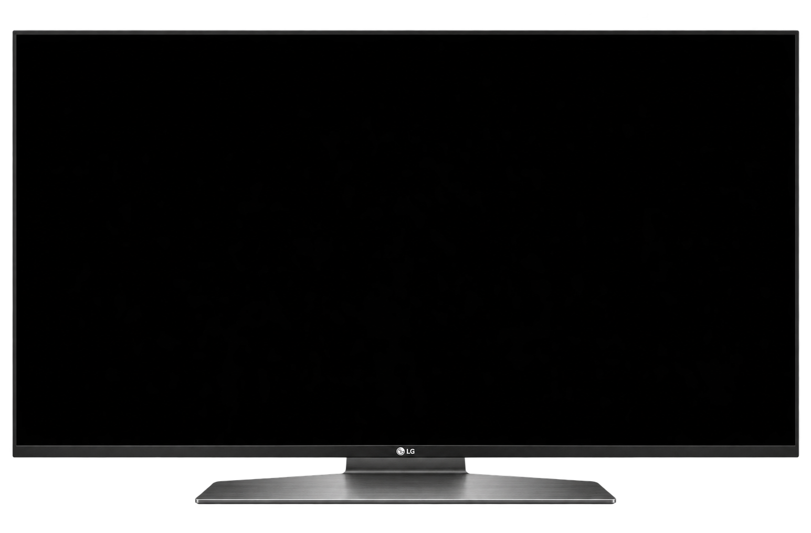
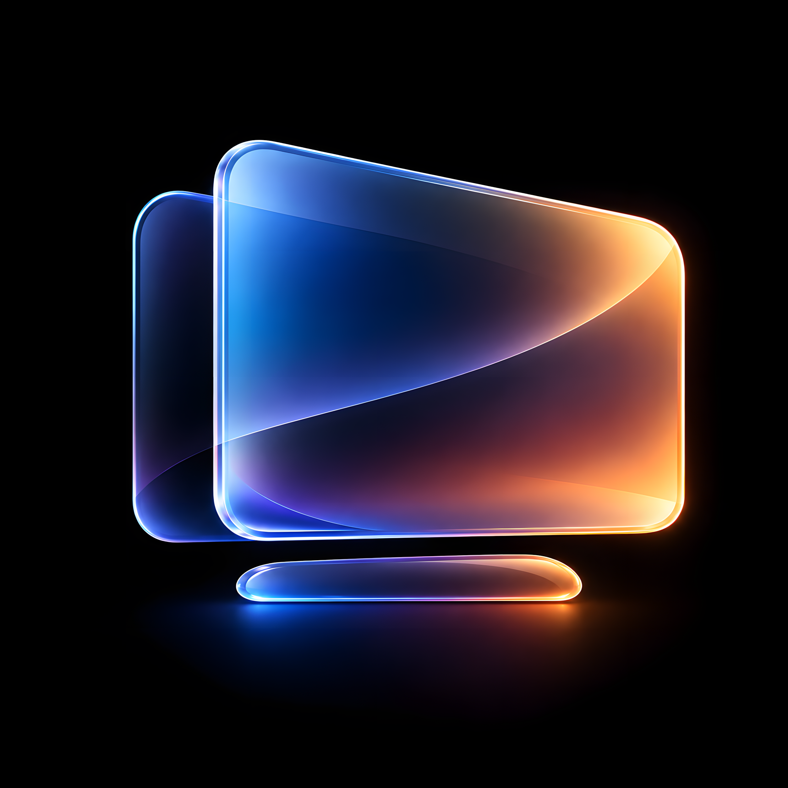

Layout
Preview
Positioning
Shortcuts
10:09
Wi-FiSettings
London12°Cloudy

Apps


Weather
Locations
London12°CloudyH 14° L 8°
AI-generated artworkMediaAdd your photos and videos
MoviesChoose a folder
TVConnect to a paired TV

Glass TV